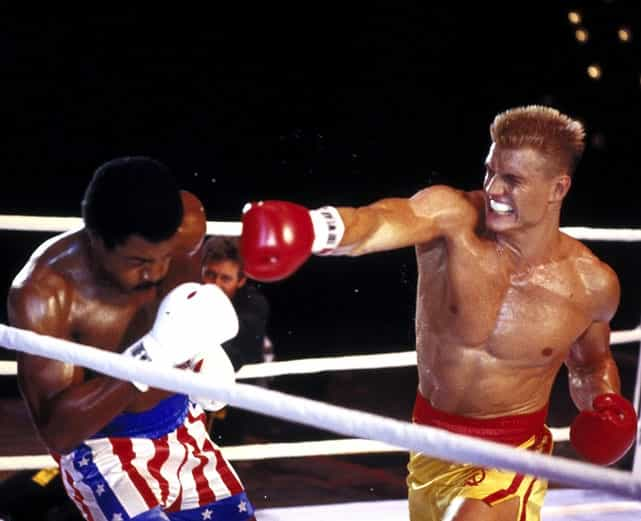

< < < Back
The 4 Important Shit Tests Rocky Balboa Passed To Win Adrian – Return Of Kings
Television and movie wives have been a staple in the fabric of American entertainment for as long as any of us can remember. From Carol Brady to Joanna Eberhart to Skyler White, these women have influenced western culture for decades. But as the years passed, masculine traits began to seep into their personas like a slow poison and before we knew it the on-screen traditional American Housewife was extinct. It wasn’t long before women in the U.S. predictably followed suit. A quick look at the steep decline over the last 60 years sheds light on this runaway train.
Leave It To Beaver
The 50s and 60s gave us June Cleaver, the gold standard of what a wife should be. Doting, nurturing, and supportive, Mrs. Cleaver was the picture of femininity and grace. Her loyalty and deference to her protective, capable husband was the blueprint for women to emulate if they wanted a chance at a happy and fulfilling life as a domesticated homemaker.
The Cosby Show
Clair Huxtable was the TV wife of the 80s but this is where we start to see a noticeable change. While it’s presumed that Cliff is the de facto head of household, it becomes rather clear that Mrs. Huxtable is the man of the house. When there was discourse in the family Cliff stepped in a precious few times while Claire was the judge, jury, and executioner much more often than not. The icing on the cake was that she, of all things, was a lawyer (and we all know how happy and fulfilled female attorneys are).
King Of Queens
The late 90s and early 2000s all but put the nail in the coffin of the traditional on screen housewife by force feeding Carrie Heffernan down our collective throats. The witty Mrs. Heffernan was a slick talking, fist pumping paralegal with a brash attitude and a short temper. She undoubtedly wore the pants in this relationship which was evident from the very beginning. Carrie’s only redeeming qualities were her perky tits and ample ass but weight gain quickly diminished her aesthetically pleasing figure. Surprise, surprise.
Last of a dying breed
One of the last great television/movie wives makes her first appearance in the 1976 motion picture, Rocky. This timid but cute pet shop employee that stole Rocky’s heart is none other than Adrian Pennino, who later became who we all know as Adrian Balboa. Most of us know the Rocky story but few acknowledge the true reasons she played such an important role in his life. One of those reasons was that she was a quality woman.

The Stallion running solid game
When Adrian met Rocky she was a shy, young, pretty girl with a submissive demeanor. Best of all, she hadn’t so much as gotten in line to ride the carousel. Yes, gentlemen, Adrian was a virgin. Now Rocky wasn’t the sharpest tool in the shed but even he recognized that women like her were becoming increasingly rare so he did what any man would do and took her off the market immediately.
Adrian enthusiastically took to her role as Rocky’s girl as would any woman in love. Aside from cooking the meat he famously tenderized with his fists, she studiously tended to his aches and pains from training, enthusiastically offered him post-training sex, and supported him when he doubted his ability to go the distance in his upcoming fight against the heavyweight champion of the world, Apollo Creed. All of this was before she became his wife. Adrian added real value to Rocky’s life because she followed his lead and seemed to be the genuine article as far as quality women go.
The other reason Adrian brought the best out of Rocky is one that is oft missed by the blue pill masses. As innocent and rare as the future Mrs. Balboa seemed to be, let’s not forget one important factor: she was a woman. And while every woman is unique in her own way, their operating systems are identical. That is, all women shit test! From the most chaste Madonnas to the sluttiest whores, all women are programmed to test your mettle as a man. The reason for this is simple: if a woman is going to invest 9 months of her life carrying a man’s seed, she’s going to make damn sure that he has strong, masculine genes that will be passed on to her offspring. As a result, her operating system kicks in and employs a series of tests to ensure that he is a worthy donor.
Now keep in mind that most of the time this is all done on a subconscious level. When a dominant alpha male gives her ‘gina tingles, she’s seldom thinking thoughts like “This man is displaying masculine traits that I want passed on to my young. I must mate with him.” All she knows is that she wants to be fucked stupid and her hamster is in overdrive searching for reason to justify it. She is utterly incapable explaining her insatiable desire for all of her holes to be plundered by alpha cock but her OS is on auto pilot making sure she isn’t about to be impregnated by some spineless beta. Concepts like “shit test” and “cock carousel” hadn’t been given actual names until recently but you can bet your salty man juice makers that they were all too prominent back in the 70s.
That said here are the 4 most important shit tests of one Adrian Balboa.
Shit Test #1: His way of life
Adrian: “Why do you wanna fight?”
Rocky: “Because I can’t sing or dance!”
Right off the bat she tests his manhood by challenging his lifestyle early on during their first date. The answer Rocky gives her is brilliant because it sets the tone for the relationship. His response tells her in no uncertain terms “Well that’s a silly question, so I’ll give a silly answer.” He does what he wants and doesn’t feel the need to justify this to her or anyone else. Alpha move, Stallion. He passes her shit test with flying colors and is handsomely rewarded with her virginity. (see: Shit Test #2)
Shit Test #2: My brother is my keeper
So now Adrian has the tingles and finds herself in Rocky’s apartment. The slut shields are definitely up as she goes full throttle with some of the most impressive, rapid fire LMR (last-minute resistance) I’ve ever seen. We all know that LMR is just another shit test and so did the Italian Stallion. So he summons his inner Don Juan and systematically disarms every layer of her defenses.
Adrian: “ I wanna let my brother know where I am. I think he might be worried.”
Rocky: “I’ll call your brother.”
<Rocky flings open the window>
Rocky: “Yo Paulie!!!! Your sister’s with me!!! I’ll call ya later!!!”
Well played. Adrian knows damn well that Paulie was probably too drunk to care about much of anything. She’s standing by the door so she’s definitely hesitant about the situation she’s in but she’s still there. Her hamster is out of control waiting to be satiated. Rocky, who is completely relaxed on his couch, stays in the set.
Adrian: “I don’t belong here.”
Rocky: “It’s alright—you’re my guest.”
Adrian: “I’ve never been in a man’s apartment before.”
Rocky: “They’re all the same.” <gesturing>
This was handled beautifully with gentle, well placed sarcasm. Her snowflaking (yes, virgins snowflake too) doesn’t phase him in the least. She’s sitting with him at this point so her defenses are weakening. Being keenly aware of this, Rocky moves in for the kill:
Adrian: “I don’t think I’m comfortable. I should leave.”
<Adrian stands up>
Rocky: “But I’m willin’ to make the best of this uncomfortable situation”
<Adrian moves to the door. Rocky intercepts her>
Rocky: <softly> “Would you take off your glasses?”
Adrian: <dumbfounded> “What?”
Rocky: “The glasses….please.”
<Rocky removes her glasses>
Adrian: <timidly> “T-Thank you.”
Rocky: “Do me another favor?”
Adrian: “What?”
Rocky: “Could ya take off that hat?”
<Adrian takes off her hat and becomes rather attractive>
Rocky: “I always knew you was pretty”
Adrian: “Don’t tease me…”
…and she was his for the taking. Masterful escalation by the champ. He had a clear understanding that Adrian’s introverted disposition combined with her lack of sexual experience meant he would have to gently and carefully escalate lest he scare his prey away.

The look in a woman’s eyes when LMR is destroyed
Throughout the exchange her body language quickly went from “no” to “yes”. Even when she made an “attempt” to leave she offered little resistance when Rocky intercepted her at the door. She wanted to be taken as all women do. As soon as she lost her hat and those horrific glasses, her deflowering was a foregone conclusion. Adrian never stood a chance.
Shit Test #3: Apollo is bad for your health
Fast forward 6 months. Rocky is basking in the afterglow of his new found celebrity after nearly pulling off the greatest upset in the history of boxing since Cassius Clay beat Sonny Liston in 1964. Things could not be better. He’s got a little extra coin from his share of the purse from the Creed fight, Adrian is now his wife and pregnant with his child, and he is Philadelphia’s new favorite son. Life is pretty damn good.
But it’s not long before the money runs dry and the Balboas fall on hard times. Rocky’s provider instinct kicks in and tells him to get back in the ring to support his growing family. And wouldn’t you know it, the perfect opportunity to drops into his lap when Apollo Creed challenges him to a rematch that would be worth millions. Slam dunk, right?
Wrong. The newly minted Mrs. Balboa forbids her husband to trade punches with the champion because she’s “worried about his long term health”. While this is very noble of her, this is simply another shit test. No woman in her right mind would prohibit her husband from accepting an opportunity to set the family for life financially. Sure, Adrian pouts and protests but her hamster secretly wants Rocky to defy her and maintain his alpha status to reassure her that the decision she made to willingly accept his seed was the correct one.
Her hamster gets its wish and true to form she throws a fit (another shit test). But like the true alpha he is, Rocky stays the course. Adrian eventually comes around (as women who belong to alphas always do) and watches her husband become the new heavyweight champion of the world, forever changing their lives.
Shit Test #4: You can’t win!
The last and final shit test administered by Mrs. Balboa was the most significant because Rocky is literally risking his life having agreed to fight his most deadly opponent, Ivan Drago. At 6’6” and 260 lbs, Drago was a lightening quick fighter with super human strength. That strength was on full display when he killed Apollo Creed in an exhibition bout.

Drago kills Creed
Balboa and Creed became best friends when they joined forces to help Rocky regain the heavyweight title he lost to another fierce opponent, Clubber Lang. When Apollo died in the ring at the hands of Drago, Rocky’s objective was clear: avenge his fallen comrade.
When Adrian learns of his decision, she hits him with everything she’s got to try to talk him out of it. She broke out the heavy artillery telling him this fight was suicide among other things. She even tells him “You can’t win!” Brutal. But Rocky Balboa is a true alpha and regardless of what the love of his life thought, said, or did, he knew he had to stick to his guns. Fresh out of options, she pulls a last second power move and tells Rocky she would not be going with him to Moscow to support him ringside. This, gentlemen, is a major league shit test. Even the most battle-hardened Super Alpha would be hard pressed to admit that he didn’t, at the very least, reconsider his decision. Remember, he’s been married this woman for years and truly loves her so it could not have been easy to get on that plane by himself. But like before, Rocky stays true to his task and starts his journey alone. And like before, Adrian rushes to his side and cheers him to victory.
Conclusion
While it’s common knowledge amongst ROK readers that women aren’t as necessary as they once were for a man’s long term success and fulfillment, there’s no denying that a good woman has the potential to increase a man’s value as well as his quality of life. Don’t get me wrong, banging sluts is great fun—there are plenty to go around and the abundant supply isn’t dwindling any time soon. But when a man gets his hands on a decent woman who understands and abides by traditional sex roles, has no discernible signs of having ridden the carousel, and finds legitimate joy in pleasing him, it would be to his advantage to let her stick around for a while. Rocky understood this and acted accordingly.
Now Adrian could certainly be a handful as we’ve seen above. But make no mistake about the fact that she tipped the balance in her husband’s favor in the two most difficult fights of his life. Never forget that before Adrian showed Rocky her support for his rematch against Creed, Rocky wasn’t giving it all he had during his training. The fact that his new wife didn’t have his back visibly affected him. Ready or not he was getting in that ring because it was what he had to do as a man. But if he continued his half-assed training, Apollo would have most assuredly ended Balboa’s career, or worse. It wasn’t until Adrian told him she wanted him to win did he train with the conviction necessary to dethrone the champion. The same thing happened in Russia. Rocky started his journey alone but Adrian’s physical presence gave him the extra resolve to beat Drago.
Few titles in this world are more alpha than Heavy Weight Champion of the World. The money, fame, and status that comes along with this title is more than enough to satisfy the hypergamy of the vast majority of woman. But regardless of title, wealth, or social standing, women will always be women and the shit tests are coming. Count on it. Rocky loved his Adrian but his mission came before her and it showed. As a result, she grew more attracted to him with every shit test he passed. Even when he risked his life by fighting Ivan Drago, Adrian couldn’t help but be more drawn to him, win or lose (Roissy Maxim #200: Chicks dig guys willing to risk an early, gruesome death. Expendability is a DHV).
But what if Rocky tried to justify himself when Adrian questioned his way of life or gave up trying to close the deal when she threw up that epic LMR? And what if he backed out of the rematch against Creed or caved into her demands to throw in the towel against Drago? Chances are he would never have had the spectacular life he was afforded as a result of failing her shit tests. Sure, he may have been able to accomplish a few minor goals here and there but Adrian’s attraction and devotion to him would have been gravely compromised. On the other hand he may have had a great life had he never met her. Being a single, rich, champion prize fighter would have offered him unlimited access to the paradise of poon. As awesome as that life would be let’s not kid ourselves here fellas—nothing feels better than having a quality woman in your corner. But if you want a quality woman you have got to be alpha because all. women. are. like. that. Even the rarest of snowflakes like Adrian Balboa.
Read More: How To Pass A Shit Test Like William The Conqueror


{kind=link}